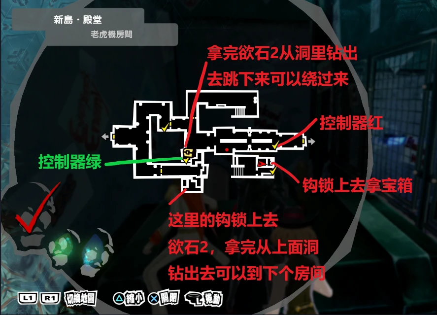
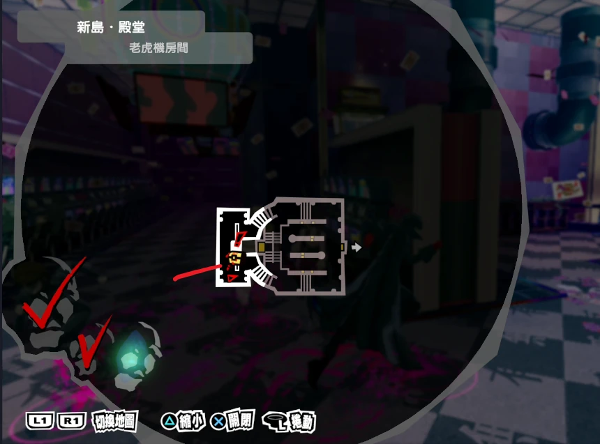
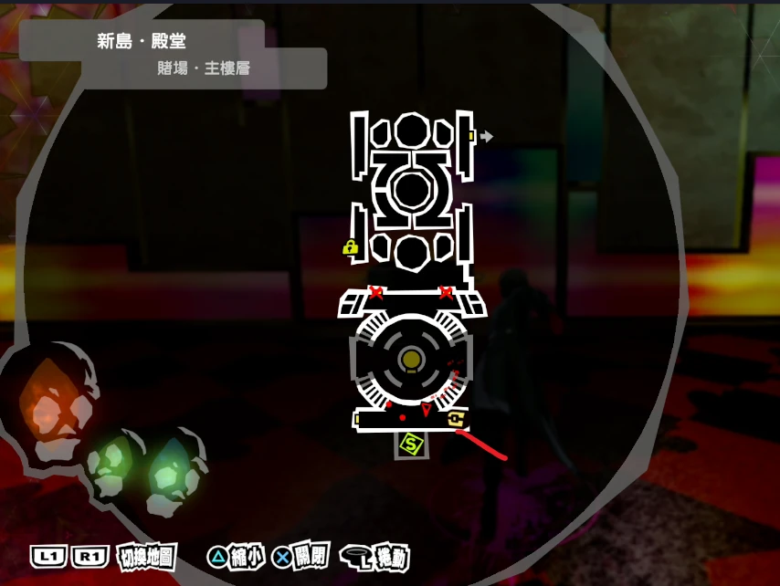
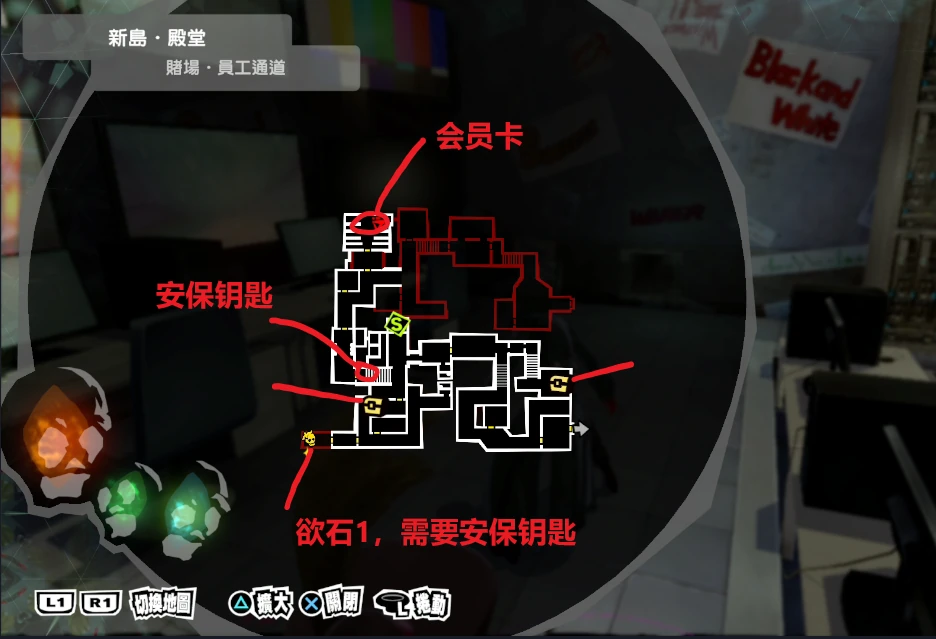
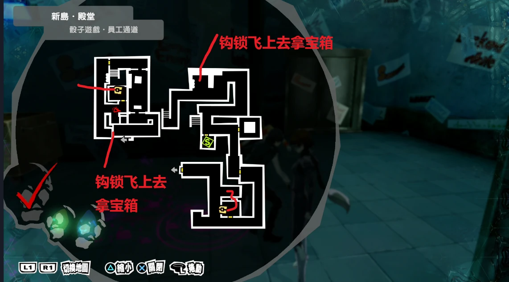
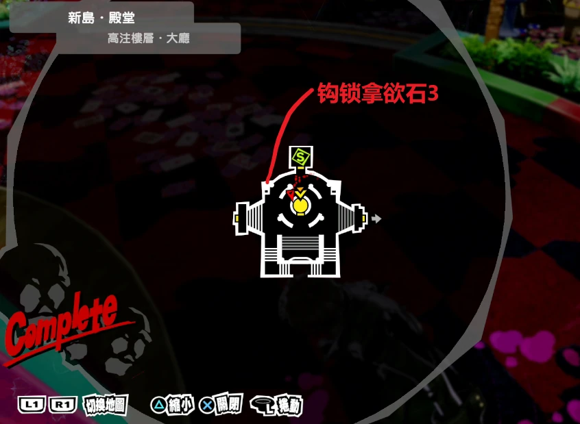
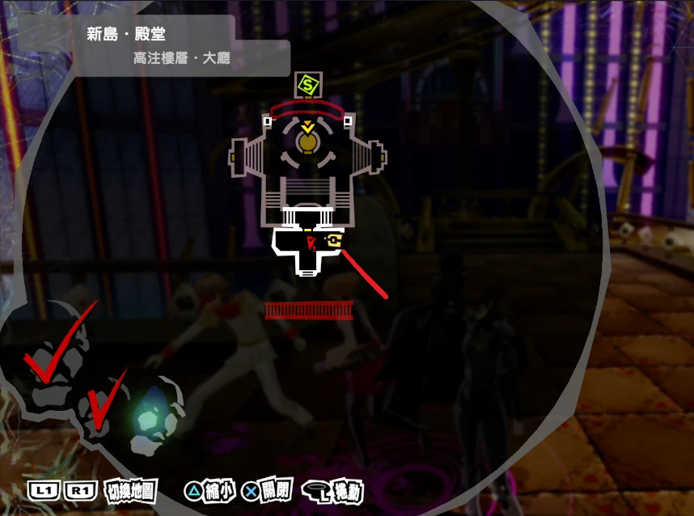
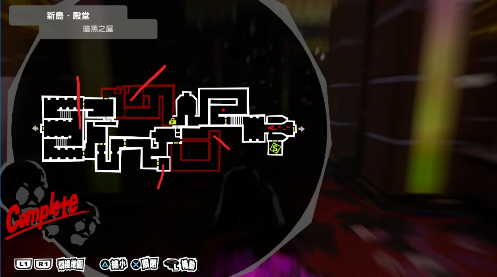
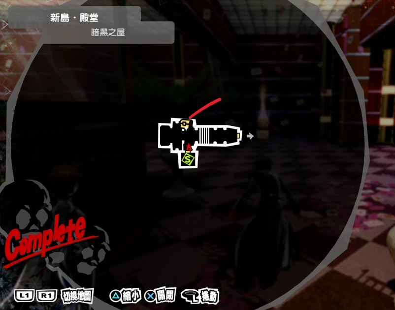

嫉妒的赌场（新岛冴）
新岛冴殿堂赌场各层地图，含黑暗之屋与老虎机房间。
敌人弱点
| LV | 塔罗牌 | 名字 | 性格 | 物 | 枪 | 火 | 冰 | 电 | 风 | 念 | 核 | 祝 | 咒 | 掉落 |
|---|---|---|---|---|---|---|---|---|---|---|---|---|---|---|
| 30 | 力量 | 奥尔洛夫 | 宝魔 | 耐 | 耐 | / | / | / | / | / | / | / | 弱 | 打弱点 |
| 39 | 信念 | 独角兽 | 懦弱 | / | / | / | 无 | / | / | 耐 | / | 无 | 弱 | 铁矿砂 |
| 40 | 女教皇 | 菊理媛 | 懦弱 | / | / | 弱 | / | / | 无 | / | / | 耐 | / | 加工皮革 |
| 41 | 正义 | 能天使 | 开朗 | / | 弱 | / | / | / | 耐 | / | / | 无 | 弱 | 厚羊皮纸 |
| 42 | 愚者 | 欧赛 | 性急 | / | 无 | 耐 | / | / | / | / | / | 弱 | 无 | 铝板 |
| 42 | 恋爱 | 奇稻田姬 | 阴沉 | / | / | / | 弱 | / | / | / | 弱 | 反 | / | 植物香油 |
| 43 | 魔术师 | 妖精女王 | 阴沉 | / | / | 无 | / | 耐 | 弱 | / | / | / | / | 马口铁的金属扣 |
| 44 | 力量 | 女武神 | 性急 | / | 耐 | 弱 | 反 | / | / | / | / | 无 | / | 聚光透镜 |
| 48 | 魔术师 | 兰达 | 阴沉 | 反 | 反 | 无 | / | 弱 | / | / | / | 弱 | 无 | 软木橡树皮 |
| 51 | 倒悬者 | 佳塔由 | 开朗 | / | / | / | 耐 | / | 反 | / | 弱 | 耐 | / | 无 |
| 52 | 命运 | 诺伦 | 开朗 | / | / | / | / | 反 | 吸 | / | / | 耐 | / | 无 |
| 53 | 太阳 | 象头神 | 开朗 | 耐 | 耐 | / | / | / | 吸 | 弱 | / | / | / | 水银 |
| 53 | 女教皇 | 丝卡蒂 | 性急 | / | / | / | 反 | / | / | / | / | / | 无 | 影女的老旧防具 |
| 小boss | 雄豹 | 欧赛 | 耐 | 耐 | 耐 | 耐 | 耐 | 耐 | 耐 | 耐 | / | 无 | 血量400左右 | |
| 小boss | 女英豪 | 妖精女王 | / | / | 无 | / | 耐 | 弱 | / | / | / | / | 血量600左右 | |
| 小boss | 招魂师 | 奈比洛斯 | / | / | / | / | / | 弱 | 耐 | / | 弱 | 反 | 血量1500左右 | |
| 小boss | 秃鹰 | 佳塔由 | / | / | / | 耐 | / | 反 | / | 弱 | 耐 | / | 血量600左右 | |
| 小boss | 终焉 | 诺伦 | / | / | / | / | 反 | 吸 | / | / | 耐 | / | 血量600左右 | |
| 小boss | 独裁者 | 巴力 | / | / | 耐 | / | / | 吸 | / | 弱 | 耐 | / | 血量1500左右 | |
| 小boss | 蛇王 | 那伽之王 | 耐 | / | / | / | / | / | / | / | / | / | 血量2000左右 | |
| 小boss | 象神 | 象头神 | 耐 | 耐 | / | / | / | 吸 | 弱 | / | / | / | 血量600左右 | |
| 小boss | 魔女 | 兰达 | 反 | 反 | 无 | / | 弱 | / | / | / | 弱 | 无 | 血量200左右 | |
| 小boss | 雷帝 | 托尔 | / | / | / | / | 吸 | / | / | / | / | / | 血量700左右 | |
| boss | 嫉妒 | 新岛冴 | / | / | / | / | / | / | / | / | / | / | 一阶段注意惩罚，老千是用玻璃盖住的。二阶段看轮盘上的属性 | |
| 小boss | 牛头鬼 | 摩洛 | / | / | 耐 | 弱 | / | / | / | / | 耐 | / |
走法地图








